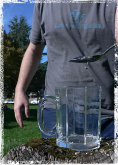

Worship: We are called to praise and worship God alone
Holiness: We are called to lead holy and righteous lives that exemplify the nature and character of God
Witness: We are called to share the gospel of Jesus Christ with those who do not know Him
Prayer: We are called to engage in intercessory prayer for the people and causes on God's heart, including standing against evil in every form
Fellowship: We are called to commit to the Church in both its local nurturing expression and its mobile multiplying expression
Check out our new "Foundational Values" video
The Foundational Values of Youth With A Mission are the expression of our basic beliefs coupled with specific directives given by God since YWAM's beginning in 1960. They are recorded here in order to pass on to successive generations that which God has emphasized to us. These shared beliefs and values are the guiding principles for both the past and future growth of our mission. Some are common to all Christians everywhere; others are distinctive to Youth With A Mission. The combination of these beliefs and values make up the unique family characteristics of YWAM--our "DNA." They are values we hold in high regard which determine who we are, how we live and how we make decisions.
1. KNOW GOD
YWAM is committed to know God, His nature, His character and His ways as revealed in the Bible, the inspired and authoritative Word of God. We seek to reflect who He
is in every aspect of our lives and ministry. The automatic overflow of knowing and enjoying fellowship with God is a desire to share Him with others (2Ki 19:19; Job 42:5; Psa 46:10; Psa 103:7-13; Jer 9:23-24; Hos 6:3; Joh 17:3; Eph 1:16-17; Php 3:7-11; 1Jo 2:4-6).
2. MAKE GOD KNOWN
YWAM is called to make God known throughout the whole world, and into every arena of society through evangelism, training and mercy ministries. We believe that salvation of souls should result in transformation of societies, thus obeying Jesus’ command to make disciples of all nations (1Ch 16:24-27; Psa 68:11; Psa 71:15-16; Psa 145:4-7; Mat 28:18-20; Mar 16:15; Act 1:8; Act 13:1-4a; Rom 10:8-15; Rom 15:18-21).
3. HEAR GOD'S VOICE
YWAM is committed to creating with God through listening to Him, praying His prayers and obeying His commands in matters great and small. We are dependent upon hearing His voice as individuals, together in team contexts and in larger corporate gatherings as an integral part of our process for decision making (1Sa 3:7-10; 2Ch 15:2-4; Psa 25:14; Isa 6:8; Amo 3:7; Luk 9:35; Joh 10:1-5; Joh 16:13-15; Heb 3:7-8,15; Rev 2:7,11,17,27; 3:6,13,22).
4. PRACTICE WORSHIP AND INTERCESSORY PRAYER
YWAM is dedicated to worship God and engage in intercessory prayer as integral aspects of daily life. We also recognize the intent of Satan to destroy the work of God and we rely upon God’s empowering presence, the Holy Spirit, to overcome his strategies in the lives of individuals and in the affairs of nations. (1Sa 7:5; 2Ch 7:14; Psa 84:1-8; Psa 95:6-7; Psa 100:1-5; Mar 11:24-25; Act 1:14; Eph 6:13-20; 1Th 5:16-19; 1Ti 2:1-4).
5. BE VISIONARY
YWAM is called to be visionary, continually receiving, nurturing and releasing fresh vision from God. We support the pioneering of new ministries and methods, always willing to be radical in order to be relevant to every generation, people group, and sphere of society. We believe that the apostolic call of YWAM requires the integration of spiritual eldership, freedom in the Spirit and relationship, centered on the Word of God (Num 12:6; 1Sa 12:16; Pro 29:18; Eze 1:1; Hab 2:2 3; Mar 1:35-39; Luk 9:1-6; Act 16:9-10; Act 26:19; 2Pe 3:9-13).
6. CHAMPION YOUNG PEOPLE
YWAM is called to champion youth. We believe God has gifted and called young people to spearhead vision and ministry. We are committed to value them, trust them, train them, support them, make space for them and release them. They are not only the Church of the future; they are the Church of today. We commit to follow where they lead, in the will of God (1Sa 17:32-50; Ecc 4:13-14; Ecc 12:1-7; Jer 1:5-10; Dan 1:17-20; Joe 2:28; Joh 6:9; Act 16:1-5; 1Ti 4:12-16; 1Jo 2:12-14).
7. BE BROAD-STRUCTURED AND DECENTRALIZED
YWAM is a Christ-centered, faith-based global volunteer movement, united by shared vision, core beliefs, foundational values and relationships. We do not have a centralized structure. Every YWAM ministry has the privilege and spiritual responsibility to develop and maintain healthy relationships with appropriate authorities and circles of elders. (Exo 18:13-26; Num 1:16-19; Num 11:16-17,24-30; Deu 29:10-13; Jos 23:1-24:28; Act 14:23; Act 15:1-31; 1Co 3:4-11; Tit 1:5-9; Heb 13:7,17).
8. BE INTERNATIONAL AND INTERDENOMINATIONAL
YWAM is international and interdenominational in its global scope as well as its local constituency. We believe that ethnic, linguistic and denominational diversity, along with redeemed aspects of culture, are positive factors that contribute to the health and growth of the mission (Gen 12:1-4; Gen 26:2-5; Psa 57:9-10; Jer 32:27; Dan 7:13-14; Act 20:4; 1Co 12:12-31; Eph 4:1-16; Col 3:11; Rev 7:9).
9. HAVE A BIBLICAL WORLDVIEW
YWAM is called to a biblical Christian worldview. We believe that the Bible—the textbook for all of life—makes a clear division between good and evil; right and wrong. The practical dimensions of life are no less spiritual than the ministry expressions. Everything done in obedience to God is spiritual. We seek to honor God with all that we do, equipping and mobilizing men and women of God to take roles of service and influence in every arena of society (Deu 8:1-3; Deu 32:45-47; 2Ki 22:8; Psa 19:7-11; Luk 8:21; Joh 8:31-32; Php 4:8-9; 2Ti 3:16 17; Heb 4:12-13; Jam 4:17).
10. FUNCTION IN TEAMS
YWAM is called to function in teams in all aspects of ministry and leadership. We believe that a combination of complementary gifts, callings, perspectives, ministries and generations working together in unity at all levels of our mission provides wisdom and safety. Seeking God’s will and making decisions in a team context allows accountability and contributes to greater relationship, motivation, responsibility and ownership of the vision (Deu 32:30-31; 2Ch 17:7-9; Pro 15:22; Ecc 4:9-12; Mar 6:7-13; Rom 12:3-10; 2Co 1:24; Eph 5:21; Php 2:1-2; 1Pe 4:8).
11. EXHIBIT SERVANT LEADERSHIP
YWAM is called to servant leadership as a lifestyle, rather than a leadership hierarchy. A servant leader is one who honors the gifts and callings of those under his/her care and guards their rights and privileges. Just as Jesus served His disciples, we stress the importance of those with leadership responsibilities serving those whom they lead (Deu 10:12-13; Psa 84:10; Isa 42:1-4; Mic 6:8; Mar 10:42-45; Joh 13:3-17; Rom 16:1-2; Gal 5:13-14; Php 2:3-11; 1Pe 4:10-11).
12. DO FIRST, THEN TEACH
YWAM is committed to doing first, then teaching. We believe that firsthand experience gives authority to our words. Godly character and a call from God are more important than an individual’s gifts, abilities and expertise (Deu 4:5-8; Ezr 7:10; Psa 51:12-13; Psa 119:17-18; Pro 1:1-4; Mat 7:28-29; Act 1:1-2; Col 3:12 17; 2Ti 4:1-5; 2Pe 1:5-10).
13. BE RELATIONSHIP-ORIENTED
YWAM is dedicated to being relationship-oriented in our living and working together. We desire to be united through lives of holiness, mutual support, transparency, humility, and open communication, rather than a dependence on structures or rules (Lev 19:18; Psa 133:1-3; Pro 17:17; Pro 27:10; Joh 13:34-35; Joh 15:13-17; Joh 17:20-23; Rom 13:8-10; 1Jo 1:7; 1Jo 4:7-12).
14. VALUE THE INDIVIDUAL
YWAM is called to value each individual. We believe in equal opportunity and justice for all. Created in the image of God, people of all nationalities, ages and functions have distinctive contributions and callings. We are committed to honoring God-given leadership and ministry gifts in both men and women (Gen 1:27; Lev 19:13-16; Deu 16:18-20; Psa 139:13-16; Mar 8:34 37; Act 10:34-35; Gal 3:28; Eph 6:5-9; Heb 2:11-12; Jam 2:1-9).
15. VALUE FAMILIES
YWAM affirms the importance of families serving God together in missions, not just the father and/or mother. We also embrace the inclusion of single-parent families. We encourage the development of strong and healthy family units, with each member sharing the call to missions and contributing their gifts in unique and complementary ways. We uphold and celebrate the biblical view that God’s intent for holy matrimony is between one man and one woman (Gen 2:21-24; Gen 18:17 19; Deu 6:6-7; Pro 5:15-23; Pro 31:10-31; Mal 2:14-16; Mat 19:3-9; 1Co 7:1-16; 1Ti 3:2-5; Heb 13:4).
16. RELY ON RELATIONSHIP-BASED SUPPORT
YWAM is called to practice a life of dependence upon God for financial provision. For individuals and YWAM corporately this comes primarily through His people. As God has been generous toward us, so we desire to be generous. YWAMers give themselves, their time and talents to God through the mission with no expectation of remuneration (Gen 22:12-14; Exo 36:2-7; Num 18:25-29; Mal 3:8-12; Mat 6:25-33; Luk 19:8-9; 2Co 8:1-9:15; Php 4:10-20; Tit 3:14; 3Jo 5-8).
17. PRACTICE HOSPITALITY
YWAM affirms the ministry of hospitality as an expression of God’s character and the value of people. We believe it is important to open our hearts, homes, campuses and ministry centers to serve and honor one another, our guests and the poor and needy, not as acts of social protocol, but as expressions of generosity (Gen 18:1-8; 2Sa 9:1-11; Psa 68:5-6; Pro 22:9; Isa 58:7; Mat 25:31 46; Act 28:7-8; Rom 12:13; Heb 13:1-3; 1Pe 4:9).
18. COMMUNICATE WITH INTEGRITY
YWAM affirms that everything exists because God communicates. Therefore, YWAM is committed to truthful, accurate, timely and relevant communication. We believe good communication is essential for strong relationships, healthy families and communities, and effective ministry (Gen 1:3-5; Num 23:19; Pro 10:19; Pro 25:9-14; Zec 8:16-17; Mat 5:33-37; Luk 4:16-22; Joh 1:1 5; Col 4:6; Jam 3:1-18).
_______________
HISTORICAL NOTE: This document includes the YWAM Statement of Purpose and the Core Beliefs and Foundational Values of Youth With A Mission. The YWAM Statement of Purpose was written in the early 1960s. We purposefully never wrote a “Statement of Faith” because we are “an international movement of Christians from many denominations” and wanted simply to clarify why God had called this movement into being. YWAM’s Core Beliefs and Foundational Values were birthed through a multi-decade process of hearing God and listening to one another. The process of identifying our values was initiated by Darlene Cunningham in 1985 at the time of YWAM’s 25th anniversary, in order to pass them on to successive generations. The document was then approved six years later by the International Council in 1991.
At that time the International Council (IC) was the recognized global eldership of the mission. Since that time the senior circle of global elders has functioned under several different names. First it was the International Council (IC). It was later called the Global Leadership Team (GLT) and then was known as the Global Leadership Forum (GLF). This body was disbanded in Singapore 2014 in order to put in place a flatter, movement framework at the trans-local level in the place of what was becoming an increasingly hierarchical organizational structure. Now there are many circles of spiritual eldership around the mission – many of them known as Area Circle Teams (ACTs). A senior group of elders has been convened by Loren and Darlene Cunningham and is known as the Founders’ Circle (FC).
Throughout these many decades, a primary role of the body of global spiritual elders (whether the IC, GLT, GLF or FC) has been to confirm, steward and safeguard the foundational documents of the mission. Though the FC does not have the governmental oversight of earlier leadership frameworks, it does carry this role of protecting and clarifying our foundational documents.
A history of YWAM’s Values, since first presented by Darlene in 1985 and approved by the IC in 1991, include updates by the GLT in 2003 and the GLF in 2011, 2014. The FC confirmed an update in 2017 during the UofN Workshop in Costa Rica regarding the inclusion of “Service” as one of our responses to our Core Beliefs; and an update in 2018 during YWAM Together in Thailand, which clarifies Value 15. At that same time this new format was adopted so that our Purpose, Core Beliefs, Foundational Values, and the supporting Scriptural references would be presented as a singular document.
Who We Are Who Leads Us Statement Of Purpose Foundational Values FAQ's Vancouver Declaration YWAM Canada News
YWAM International University Of The Nations YWAM Vancouver YWAM Organic YWAM City YWAM Associates International Mission Builders International Global Target Network Create - Emerge Global Prayer House In Touch E-zine
